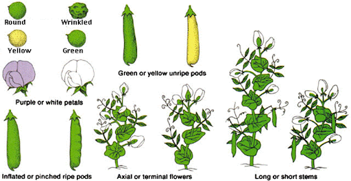
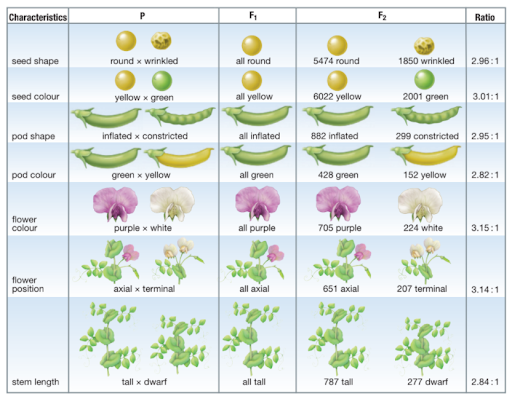
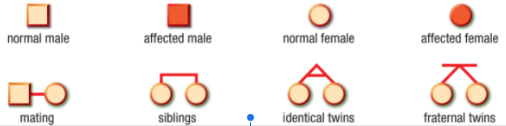
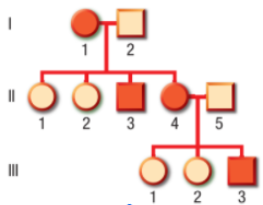
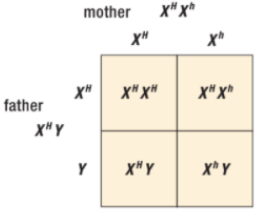

Mendelian Inheritance
GREGOR MENDEL
- Born in 1822 in Moravia (now part of the Czech Republic.
- Son of a tenant farmer; joined a monastery to get an education.
- Worked with pure lines of peas for eight years.
- Prior to Mendel, heredity was regarded as a "blending"
- process and the offspring were essentially a "dilution"of the different parental characteristics.
- With Abbot Napp’s encouragement, Mendel studied heredity in peas, carefully choosing traits that did not appear to blend. Collected data from 1856 - 1865.
- Mendel’s creative contribution: he was the first to follow single traits from generation to generation instead of trying to document and follow every trait in the plants.
MENDEL’s Pea Plants
- Mendel looked at seven traits or characteristics of pea plants:


- In 1866 he published Experiments in Plant Hybridization, (Versuche über Pflanzen-Hybriden in which he established his three Principles of Inheritance
- He tried to repeat his work in another plant, but didn’t work because the plant reproduced asexually! If…
- Work was largely ignored for 34 years, until 1900, when 3 independent botanists rediscovered Mendel’s work
- Mendel was the first biologist to use Mathematics – to explain his results quantitatively.
- Mendel predicted,
-
The concept of genes
-
That genes occur in pairs
-
That one gene of each pair is present in the gametes

7 Characteristics of MENDEL’s Pea Plants

Results to Mendel’s Pea Plants Experiment

Genetic terms you need to know!!!
Select each item to learn more.
Gene
a unit of heredity; a section of DNA sequence encoding a single protein
Genome
the entire set of genes in an organism
Alleles
two genes that occupy the same position on homologous chromosomes and that cover the same trait (like ‘flavors’ of a trait).
Locus
a fixed location on a strand of DNA where a gene or one of its alleles is located.
Homozygous
having identical genes (one from each parent) for a particular characteristic.
Heterozygous
having two different genes for a particular characteristic.
Dominant
the allele of a gene that masks or suppresses the expression of an alternate allele; the trait appears in the heterozygous condition.
Recessive
an allele that is masked by a dominant allele; does not appear in the heterozygous condition, only in homozygous.

Select each item to learn more.
Genotype
the genetic makeup of an organisms
Phenotype
the physical appearance of an organism (Genotype + environment)
Monohybrid cross
-
a genetic cross involving a single pair of genes (one trait); parents differ by a single trait.
-
P = Parental generation
-
F1 = First filial generation; offspring from a genetic cross.
-
F2 = Second filial generation of a genetic cross
MENDEL’S PRINCIPLE
Select each tab to learn more.
One allele masks another, one allele was dominant over the other in the F1 generation.
When gametes are formed, the pairs of hereditary factors (genes) become separated, so that each sex cell (egg/sperm) receives only one kind of gene.
Genotype and Phenotype
What trait/s have you inherited from your parents?
Genotype
- The genotype refers to the entire set of genes in a cell, an organism, or an individual. A gene for a particular character or trait may exist in two forms; one is dominant (E) and the other is recessive (e).

Examples of Genotype
There are three basic genotypes for a particular character:
- AA = homozygous dominant
- Aa = heterozygous
- aa = homozygous recessive
Phenotype
- Phenotype is the physical appearance or other characteristic of an organism as a result of the interaction of its genotype and the environment.
- Some examples would be:
- Size
- Shape
- Color
Monohybrid cross

Monohybrid cross for stem length

PUNNETT SQUARE
It is a diagram that summarizes every possible combination of each allele from each parent; a tool for determining the probability of a single offspring having a particular genotype.
2.png)
USING A PUNNETT SQUARE
2.png)
MONOHYBRID CROSS: F2 Generation
2.png)
2.png)
Sample Problem 1: Homozygous Dominant/Homozygous Recessive Cross
|
In pea plants, the allele for yellow seed colour, Y, is dominant over that for green seed colour, y. Consider a cross between a pea plant that is homozygous for yellow seeds and a plant that is homozygous for green seeds. Create a Punnett square to determine the possible genotypes and phenotypes of the offspring.
Solution: The plant that is homozygous for yellow seed colour has a genotype of YY. The plant that is homozygous for green seed colour has a genotype of yy. |
Sample Problem 1: Homozygous Dominant/Homozygous Recessive Cross
 |
Sample Problem 1: Homozygous Dominant/Homozygous Recessive Cross
|
The four possible genotypes for the cross between a pea plant that is homozygous for yellow seed colour and a pea plant that is homozygous recessive for green seed colour are Yy, Yy, Yy, and Yy. The offspring will all have the genotype Yy, so all will have the yellow seed phenotype. |

Sample Problem 2: Heterozygous/ Heterozygous Cross
|
Two heterozygous yellow seed plants (Yy) are crossed. Determine the genotype and phenotype ratios of the F2 generation offspring.
Genotype ratio: 1 homozygous dominant plant (YY) to 2 heterozygous plants (Yy) to 1 homozygous recessive plant (yy), or 1:2:1. Both YY and Yy plants have yellow seeds.
Phenotype ratio: F2 generation is 3 yellow seed plants (1 YY + 2 Yy) to 1 green seed plant (1 yy), or 3:1. |

Dihybrid Cross
1.png)
Dihybrid Cross: Flower color and Stem length
1.png)
Dihybrid Cross; F2
1.png)
Dihybrid Cross;
1.png)
Dihybrid Cross: 9 Genotypes;
1.png)
Mendel’s Principle
Based on these results, Mendel postulated the
3. Principle of Independent Assortment
“Members of one gene pair segregate independently from other gene pairs during gamete formation”
Genes get shuffled – these many combinations are one of the advantages of sexual reproduction
TEST CROSS
|
|


Do Mendel’s Law always apply?

Beyond Mendelian Genetics
-
Mendel’s experimental work involved the crossing of what he called “typical” plants (homozygous dominant) with “atypical” plants (homozygous recessive). Mendel had discovered complete dominance.
-
Complete dominance is a situation where an allele will determine the phenotype, regardless of the presence of another allele.
-
Not all traits are passed on from parent to offspring in the simple patterns that Mendel proposed. Variations in the patterns of heredity exist, and dominance is not always complete. There comes the extension of Mendel’s law;
-
Incomplete Dominance
-
Codominance
Incomplete dominance
-
Incomplete dominance: the heterozygote is intermediate in phenotype between the 2 homozygotes.
-
A condition where all three genotypes are expressed.
-
Phenotypic level: contradicts Mendel’s conclusions.
-
Genotypic level: consistent with Mendel’s laws.

Four-o'clock Flowers
-
Incomplete dominance
-
Neither Red
-
or White (W) is dominant
-
When a homozygous red flower (RR) Mix with a homozygous white flower (WW), the alleles blend in the hybrid (RW) to produce pink flowers.
Andalusian Chickens
-
Incomplete dominance
-
Neither Black (B) or
-
White (W) are dominant
-
The offspring of a black feathered chicken (BB) and a white feathered chicken (WW) are blue (BW) – BLUE HEN!!

Codominance
-
Codominance: the heterozygote shows some aspect of the phenotypes of both homozygotes.
-
Two equally dominant alleles are expressed at the same time.
-
Heterozygous phenotype will have both phenotypes visible


Shorthorn Cattle
-
Codominance
-
Homozygous red (RR)
-
Homozygous white (WW)
-
The offspring of will have both red and white hairs (RW)
-
The offspring are heterozygous and called “roan”


Multiple Alleles
Sometimes there are more than two alleles present in the gene pool for a gene.
Blood typing


Polygenic Traits
traits produced by more than one pair of genes; results in a variety of phenotypes
|
Example: skin color, eye color, height |


Pedigrees—Tracking Inheritance
Scientists are especially interested in determining the patterns of inheritance of genes that are beneficial or detrimental to human health. For obvious reasons, experimental genetic crosses cannot be conducted on humans. However, we can use what we know about heredity to investigate individuals and track the inheritance of a trait
from generation to generation within a family.

Squares represent males and circles represent females. Individuals who express a trait are shown in a shaded circle or square. Mating between two individuals is shown by a horizontal line, and children are connected to their parents with vertical lines.
Pedigree Charts
Pedigree charts are also extremely useful for animal and plant breeders. Pedigrees can be used to track the inheritance of both desirable and undesirable traits and in some cases justify very high “stud fees” for prize animals. A farmer, for example, might ask for an opportunity to view a detailed pedigree of a bull before agreeing to pay for breeding with his prize cows. Similarly, a foal born to prize racehorse parents
might be sold for millions of dollars based on their pedigrees—and long before its
first race.

An example of a pedigree chart spanning three generations. In this
pedigree, the grandmother (I-1), one of her sons (II-3), one of her daughters (II-4),
and her grandson (III-3) have freckles. The allele for freckles (F ) is dominant
over the allele for no freckles (f ).
Sex Linkage—Following the X and Y Chromosomes
Different organisms have different numbers of chromosomes. Humans have 23 pairs of chromosomes. One set of chromosomes consists of the sex chromosomes, while the other 22 sets are autosomes, the non-sex chromosomes. If an allele is found on an
autosome, it is said to be under the control of autosomal inheritance.
Some alleles that cause genetic disorders are found on the X chromosome. Females (XX) have two copies of the gene, but males (XY), with only one X chromosome, have only a single copy. Since the allele with the disorder is found on the X chromosome and is recessive, this type of inheritance is called sex-linked and, more specifically, X-linked.
Some examples of X-linked inheritance are red–green color blindness, hemophilia A, and male-pattern baldness. Individuals who have hemophilia A are not able to form a clot when they are cut and may bleed for a lengthy period of time.

|
Hemophilia A is X-linked. A female carrier can pass on the hemophilia allele to her sons and daughters. Males cannot pass on hemophilia to their sons. |